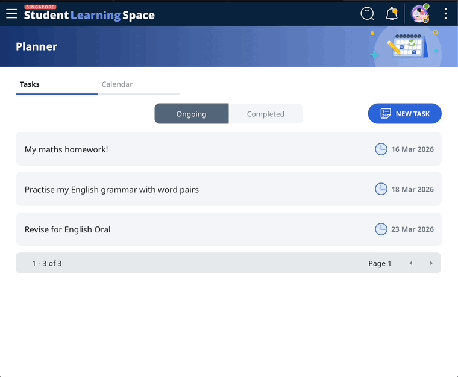
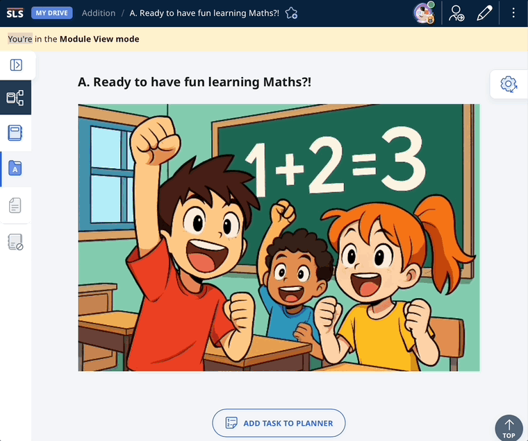

case study
Was our to-do list asking users to do a little too much?
A feature I shipped and disagreed with, and what I'm doing about it.

case study
A feature I shipped and disagreed with, and what I'm doing about it.
SLS is a national learning platform used by 500,000 students and teachers across Singapore. There was no unified view that brought together assigned tasks, self-directed study, and work from outside the platform. At this scale, getting that wrong could influence how an entire generation of students learns to manage their own work online.
I led scope definition, stakeholder alignment, and design direction across a five week design sprint, keeping the user problem at the centre while scope and opinions shifted around it.
My proposal was specific. Assigned work would automatically appear in the planner and clear when completed. Self-directed study would stay manual. Students would still practise organising their own learning, just not for tasks teachers had assigned them.
The counterargument was principled. The position was that students should manage their task lists in full, including assigned work, as a way of building executive functioning skills. That automating any part of it would shortcut something valuable.
That's a real tension. Usability and pedagogy don't always point the same direction. This project was one of the first times our team had named it explicitly for outside the context of assigned work.
The team landed on a version that prioritised student ownership and learning organisation skills over ease of use. My designer and I shared the same read on the tradeoff we were making.
At our sprint review, the questions from senior leadership were about why the platform needed to work differently from the systems students already knew.
Despite significant scope changes mid-sprint and these questions, the feature shipped.

Users can add their own to-do items and mark them as complete.

Users can create a task for the module sections they're viewing.
Now, we're moving toward better support for students with diverse learning needs, including those who find executive functioning difficult.
The original counterargument and the accessibility direction are in direct tension which needs resolving.
I'm still thinking about this build. Now that I'm part of a broader initiative where I own platform usability, I'm currently pulling adoption data and have proposed to put automation back on the product backlog.